Customer card, Products, and Shop desk. Each step is a real screen grab from job m10vm23-20261108T070647Z-d0f35a. Slideshows:
Customer card, Products, Shop desk.
editor
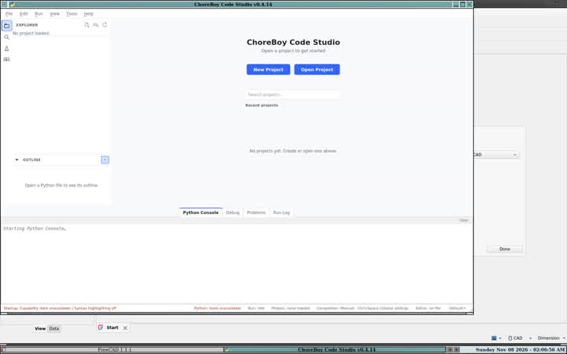
1. ready Start Code Studio.. Saw: ready in 1955 ms; status Startup: Capability data unavailable | Syntax highlighting off. (pass)
customer
2. new-project File > New Project, name Customer card.. Saw: folder /tmp/m10_cbcs_work/projects/Customer card. (pass)
4. from-table Build a form from customers (Record form).. Saw: Create customer form with 5 fields; picked=True; start enabled=False checked=False. (pass)
6. credit-check Add check Between with smallest 0 on credit_limit.. Saw: check committed. (pass)
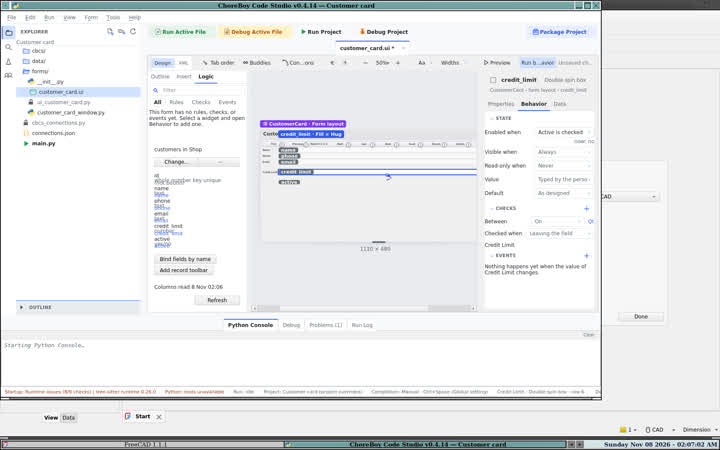
7. enabled-rule Enabled when on credit_limit, formula active.. Saw: committed=True outline missed (no visible outline); using the current widget. (pass)8. save Ctrl+S.. Saw: ui file ui_customer_card.py exists=True.. (pass)
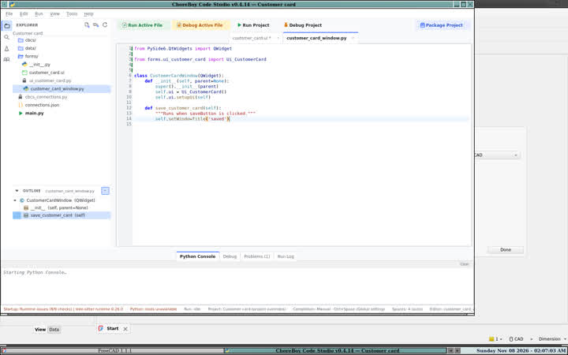
9. your-code Select saveButton, Shift+F10, Write code for, replace pass.. Saw: method file has the body=True. . (pass)
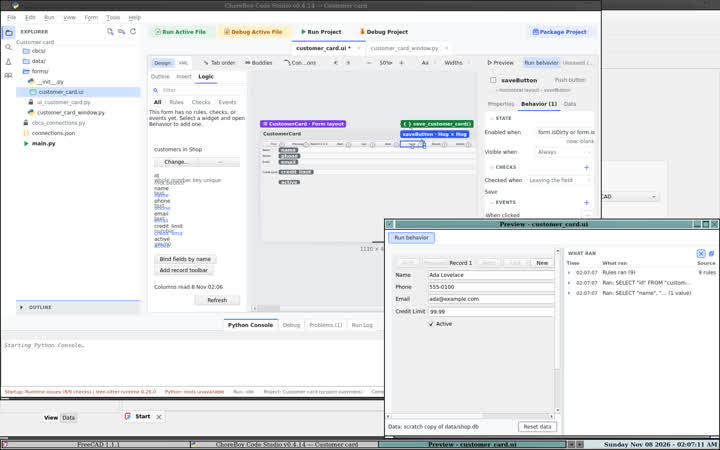
10. preview Preview with Run behavior.. Saw: 1680x1050. (pass)
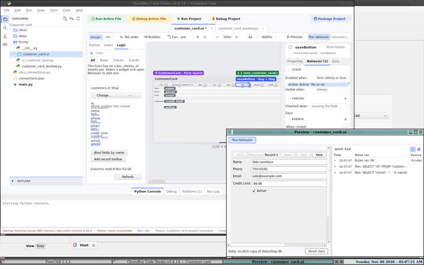
11. preview-light View > Theme > light while Preview is open.. Saw: screen 1680x1050; popup black=None. (pass)
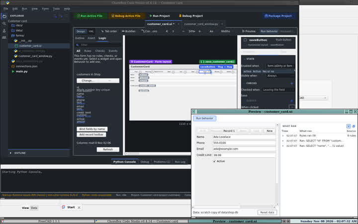
12. preview-dark View > Theme > dark while Preview is open.. Saw: screen 1680x1050; popup black=None. (pass)
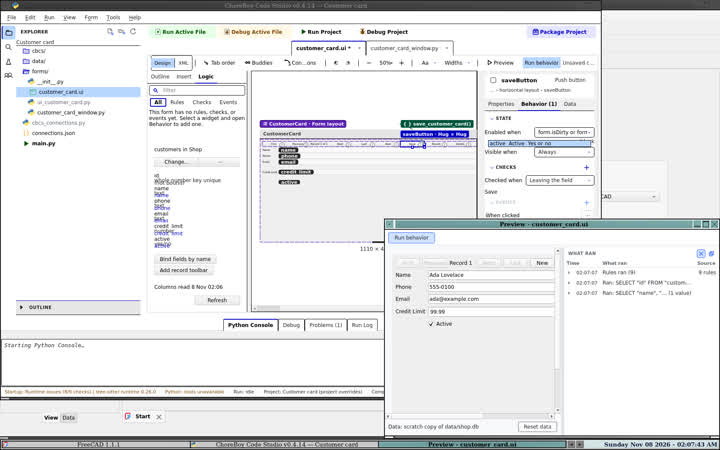
13. preview-high_contrast_light View > Theme > high_contrast_light while Preview is open.. Saw: screen 1680x1050; popup black=None. (pass)
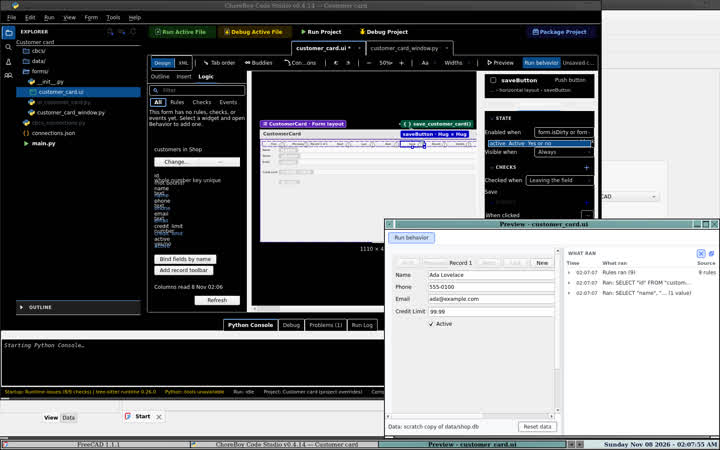
14. preview-high_contrast_dark View > Theme > high_contrast_dark while Preview is open.. Saw: screen 1680x1050; popup black=None. (pass)15. entry The start checkbox is off because main.py is already the project's file. Wrote the launch the manual describes.. Saw: main.py opens CustomerCardWindow. (pass)
products
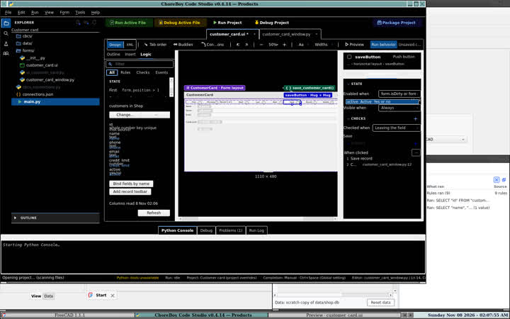
16. new-project Create and open Products with the project commands (the New Project dialog did not return once a project was open).. Saw: /tmp/m10_cbcs_work/projects/Products. (pass)
18. from-table Build a form from products (List screen and record form).. Saw: Create product form with 4 fields and lines and a list; picked=True; start enabled=False checked=False. (pass)19. filter-rule Enabled when on the search box: form.count > 0.. Saw: committed=True outline click. (pass)
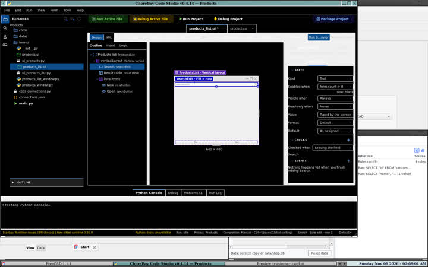
20. filter-row Data panel, add a filter row.. Saw: filter add clicked. (pass)21. save Ctrl+S.. Saw: ui file ui_products.py exists=True.. (pass)22. list-file Save also writes the list screen.. Saw: ui_products_list.py exists=True. (pass)
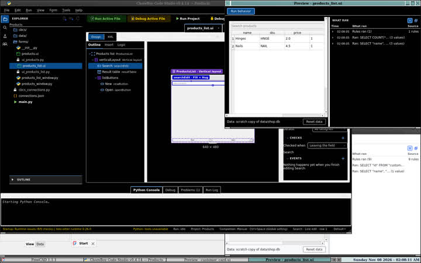
23. preview Preview the products form.. Saw: 1680x1050. (pass)
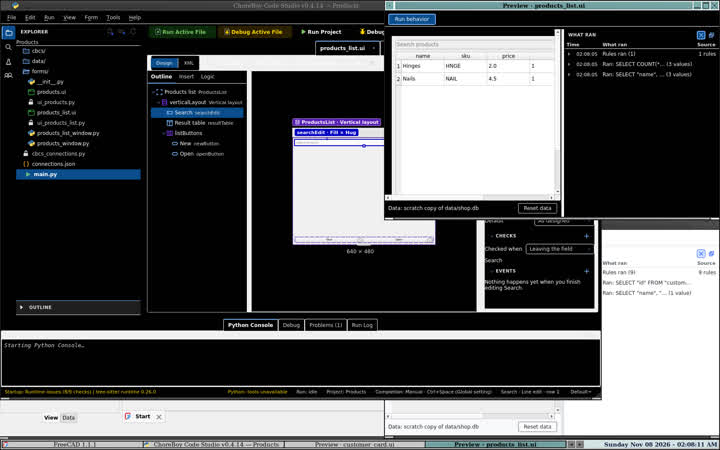
24. entry The start checkbox is off because main.py is already the project's file. Wrote the launch the manual describes.. Saw: main.py opens ProductsListWindow. (pass)
shop
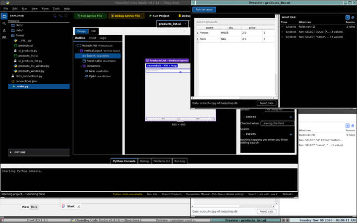
25. new-project Create and open Shop desk with the project commands (the New Project dialog did not return once a project was open).. Saw: /tmp/m10_cbcs_work/projects/Shop desk. (pass)
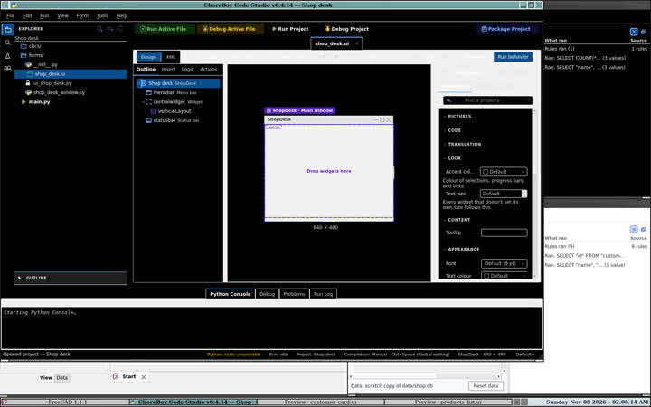
26. main-window New form shop_desk, Main window card.. Saw: canvas up=True. (pass)
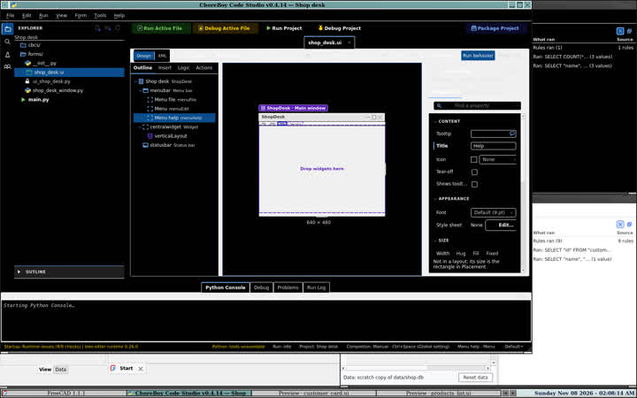
27. menus On the menu bar, type File, Edit and Help.. Saw: titles in the ui file=True. (pass)
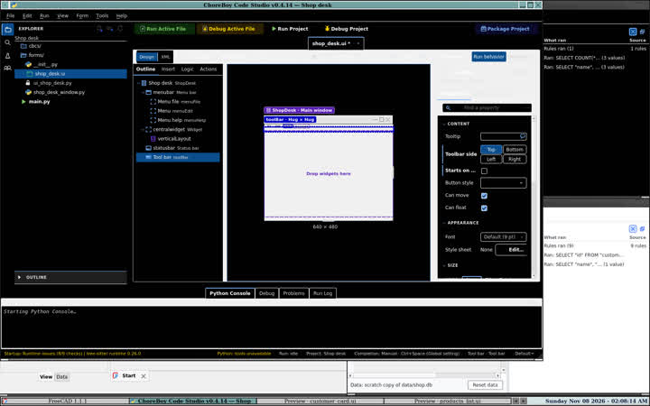
28. toolbar Form > Main window > Add toolbar.. Saw: action ran=True. (pass)29. tabs Insert a tab widget in the central area.. Saw: insert closed. (pass)30. buddies-tabs F7 buddy, F8 tab order.. Saw: 1680x1050. (pass)31. save Ctrl+S.. Saw: ui file ui_shop_desk.py exists=True.. (pass)
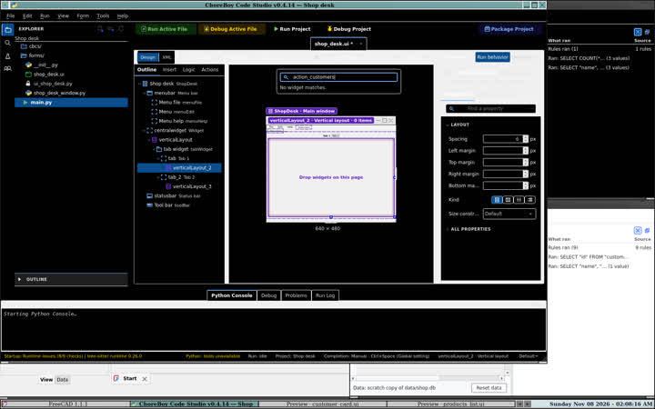
32. entry The start checkbox is off because main.py is already the project's file. Wrote the launch the manual describes.. Saw: main.py opens ShopDeskWindow. (pass)
customer
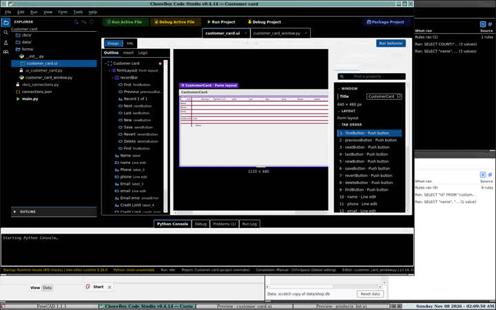
33. package Run > Package Project.. Saw: artifact /tmp/m10_cbcs_work/export/customer/customer_card_installer_v0.1.0 package_project success=True error=. (pass)34. install Run the package installer (perform_install, the same call the wizard's Install button makes).. Saw: ok=True dir=/home/default/FreeCAD/Apps/customer_card. (pass)
36. install Run the package installer (perform_install, the same call the wizard's Install button makes).. Saw: ok=True dir=/home/default/FreeCAD/Apps/products. (pass)
shop
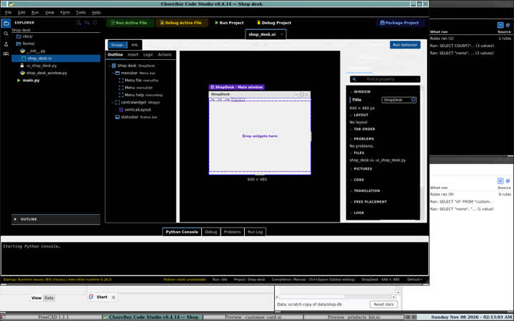
37. package Run > Package Project.. Saw: artifact /tmp/m10_cbcs_work/export/shop/shop_desk_installer_v0.1.0 package_project success=True error=. (pass)38. install Run the package installer (perform_install, the same call the wizard's Install button makes).. Saw: ok=True dir=/home/default/FreeCAD/Apps/shop_desk. (pass)
customer
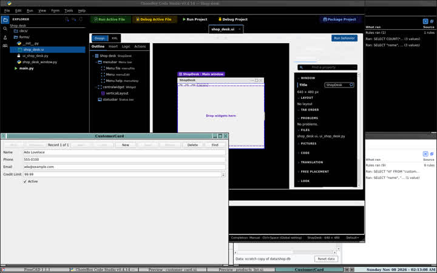
39. launcher Start the installed .desktop Exec.. Saw: pid 1427007 screen 1680x1050 . (pass)40. use-installed Use the installed app_files window.. Saw: rc=0 ms=446. (pass)